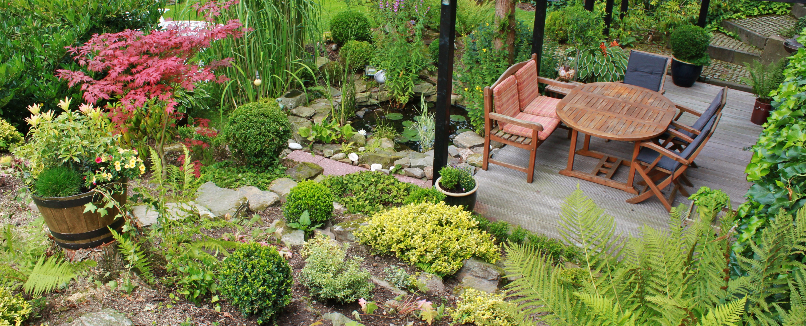
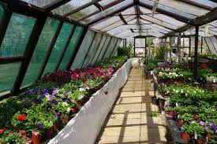
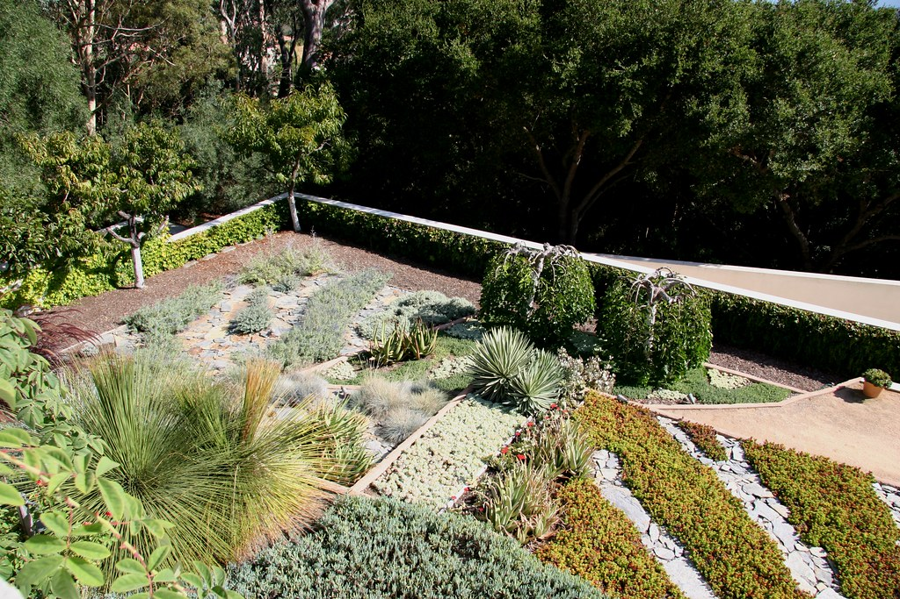
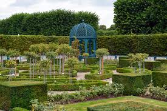
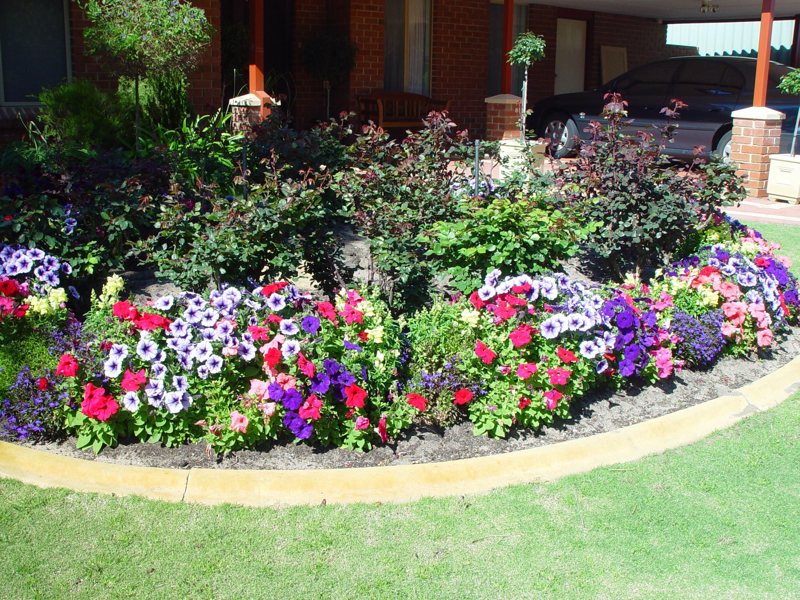

Based in Tuscon, Arizona, Lucky Shrub is a medium-sized garden design firm that specializes in garden design and creation, maintenance and landscaping. The company also runs a small plant nursery that sells indoor and outdoor plants, making them a one-stop shop for clients to "transform any space into an oasis you can be proud of". Lucky Shrub was started by a husband and wife team, Jason and Maria, who share a long-time love for plants. Jason is the garden architect. He creates and oversees all designs while managing his team of landscapers. Maria manages all the marketing for the company and oversees the nursery.
The Design Process
All gardens are different and all our designs are unique, therefore the following information is a guide. Please do also take a look at our flipbook which is a really comprehensive guide to the way we present our design concepts. It is incredibly visual and details what we do in the way of illustrative masterplans, sketches, 3D visualisations, lighting plans and more.
Our Plant Nursery
In our nursery we offer a wide variety of plants and flowers from all continents. We also offer seeds, synthetic grass, pots, fertilizers, pot supports and much more.
Our Services
We have been designing and creating gardens since 2001, we offer an unrivalled and professional design and build service, primarily for gardens situated in Arizona.
- Complete design and build service
- * Complete piece of mind from the start to the finish of your project
- Concept drawings
- * To suggest how your garden might look
- Finished plans and construction details
- * To enable you to implement the design
- 3-D models
- * To help with visualisation
- Planting plans
- * Providing a recipe of what will work well in your garden
- Costings
- * Broken down into bite sized chunks, to enable you to budget and offer the option of implementing the design over a period of time
- Garden construction
- * Implementation of the design, whether designed by us, you, or another designer
- Project co-ordination
- * To ensure that the garden is built to professional standards, whether it is designed by us or another designer
Our Projects
Images of completed projects:
  